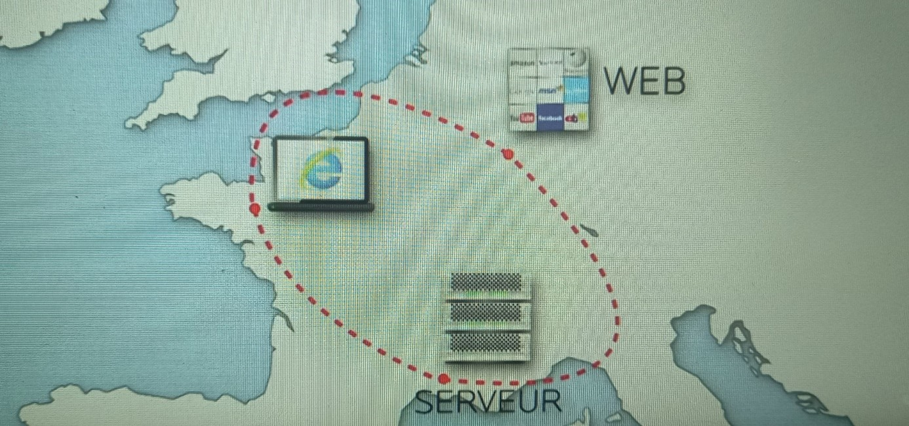

Le Darknet
Le Darknet est un sous-ensemble d’Internet qui permet de communiquer et d’échanger de façon anonyme. On y accède par des logiciels spéciaux comme Tor ou encore Frenet.

Les dates importantes :
- Année 70’s crée avec Arpanet (il faisait partie des réseaux isolés).
- 2002 : droit de cité à la suite de « The Darknet and the Future of Content ” (= à partir de là, on peut utiliser le terme).
- 2010: popularisation à travers les medias.
Dans cette petite partie d’internet, on retrouve majoritairement des contenus illégaux comme la vente d’armes, des sites de ventes interdites (drogues, faux passeports, streaming, etc…), de l’atteinte aux droits d’auteur, des offres de piratages informatique ou encore du contenu pédophile.
LE BUT ? Dans le secteur des ventes, l’objectif est d’arnaquer le plus de personnes possibles et ce, en restant dans l’anonymat.
Cependant, les services secrets ou les autoritées peuvent s’en servir pour « attraper » / « piéger » des acheteurs hors la loi.
De plus, certains y vont pour pouvoir avoir une liberté d’expression TOTALE en dénonçant tout type de sujet.
C’est un « domaine » où il y a un vrai échange commerciale trafiqué entre le vendeur et son acheteur. Ces échanges sont payés en bitcoin.

Le Dark Web
Le darkweb appelé aussi le web sombre est une sous partie du darknet.
Cette partie du web* peut-être aussi espace de liberté pour les personnes qui tiennent à la protection de leur vie privée en ligne.
Ainsi, cette partie du web peut être utiliser par un citoyen cherchant à s'informer sur des sujets interdits / tabou dans son pays ou par des services secrets pour démanteler des réseaux.
*Web : Ensemble des données reliées par des liens hypertextes, sur Internet. Elle est souvent représentée par une toile d’araignée et est divisé en 2 parties, le web visible et le web invisible.
Comparaison de l’expédition des données par internet et le Dark net :
Expédition des données sur internet :

Expédition des données sur le Darknet (Par Tor par exemple) :